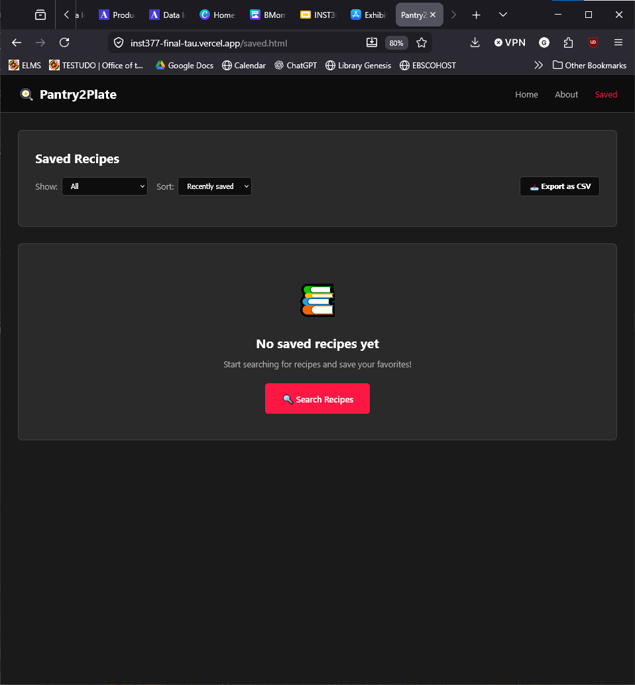
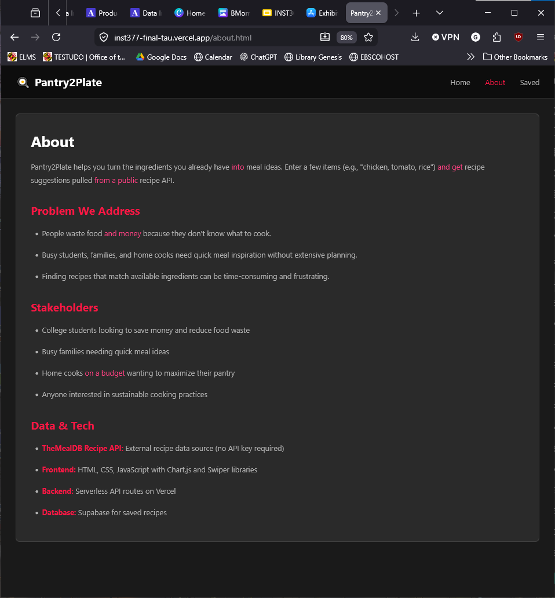
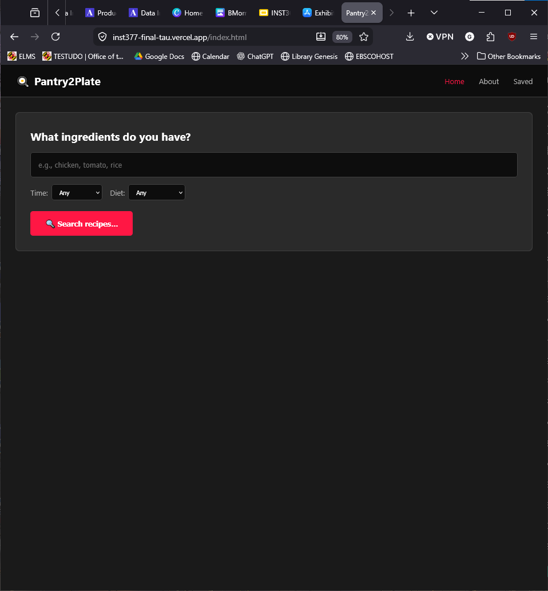

UI Design · Front-End · Product Design
Pantry2Plate: Helping users turn available ingredients into meal ideas.
A responsive recipe discovery web app built for students, families, and home cooks who want fast meal ideas using ingredients they already have.
Problem
People waste food and money when they do not know what to cook. Busy students, families, and home cooks need quick meal inspiration without extensive planning.
My contribution
- Designed and built the main ingredient search interface.
- Added filters for cooking time and diet preferences.
- Built saved recipe functionality with sorting and CSV export.
- Connected the interface to recipe data and backend storage.
Core users
- College students trying to save money and reduce food waste.
- Busy families needing quick meal ideas.
- Home cooks on a budget who want to maximize their pantry.
Final screens
The interface includes a home search page, an about/problem page, and a saved recipes page with filtering, sorting, and CSV export.



Design decisions
Simple input first
The home page starts with a direct ingredient input so users can search without needing an account or long setup process.
Constraint-based filtering
Time and diet filters help users narrow options based on real-life constraints.
Saved recipes
A saved page supports return visits and gives users a way to organize meal options.
Export support
CSV export gives users a practical way to move saved recipe data outside the app.
Reflection
This project helped me connect UI design with front-end implementation. I learned how design decisions affect data flow, filtering, empty states, and how quickly users can move from a need to an answer.